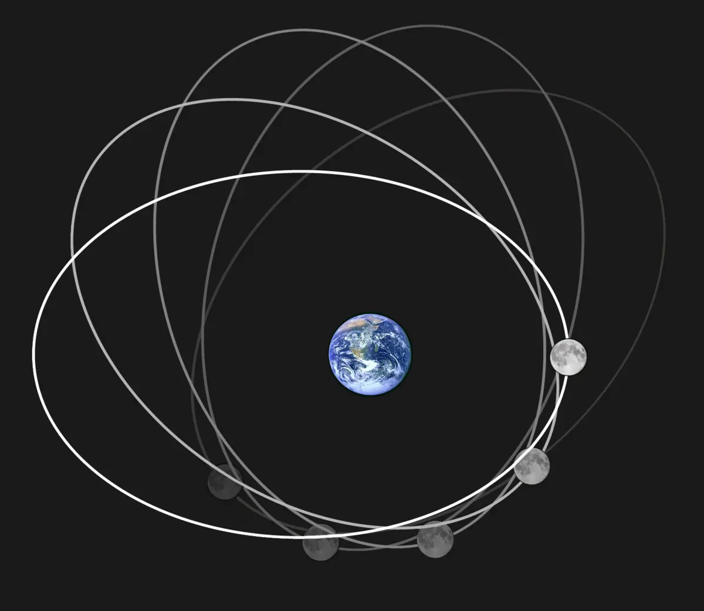
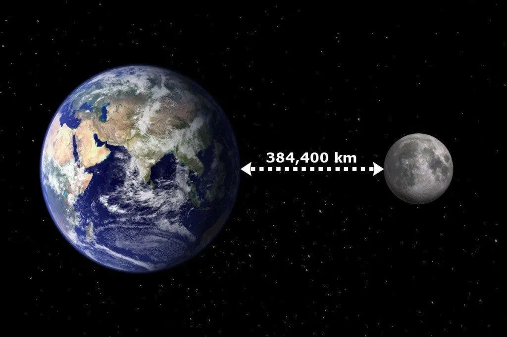

Каждый вечер она появляется над горизонтом — Луна. Молчаливая спутница Земли, бледный шар, висящий в темно-синем небе. Она кажется неподвижной и надёжной, как ночной фонарь. Но вот вопрос: если Земля её притягивает, почему Луна не падает?
Звучит логично: ведь всё, что подбросишь — в конце концов возвращается вниз. Мяч падает. Яблоко падает. Самолёты — и те рано или поздно садятся. Так почему Луна, которая явно «подвешена» в небе, до сих пор не рухнула? Ответ — не просто в законах физики. В нём есть элегантность и даже поэзия:Луна всё время падает. Просто всё время промахивается.
Что значит «падает»?
Представьте себе: вы запускаете пушечное ядро с горы. Оно летит вперёд и, притягиваемое Землёй, через некоторое время падает. Если увеличить силу выстрела, оно полетит дальше — и снова упадёт. А теперь вообразите, что ядро летит настолько быстро, что пока оно «падает», поверхность Земли всё время изгибается под ним — и ядро так и не достигает земли. Оно продолжает «падать»… бесконечно.
Это и есть орбита — траектория, по которой тело движется под действием гравитации, но не падает на объект, который его притягивает, потому что одновременно движется достаточно быстро вбок.
Луна не висит — она летит. Со скоростью почти 3 700 километров в час, непрерывно огибая Землю. И каждый раз, когда её притягивает к себе гравитация, Луна уже успевает чуть-чуть сместиться в сторону. Она как акробат на трапеции, который всё время падает — но с таким расчётом, что ни разу не упал.
3700
Километров в час
Баланс двух сил
Чтобы понять это движение, важно помнить: на Луну действуют сразу две силы. Первая — это гравитация. Та самая сила, которую открыл Ньютон. Она притягивает Луну к Земле, как притягивает к ней всё остальное. Вторая — это инерция. Луна движется с определённой скоростью и, по законам физики, продолжает двигаться вперёд. Но вместо прямой линии — выходит дуга. Потому что гравитация всё время «подгибает» её путь внутрь.
Это напоминает то, как вы бросаете камень с моста: он летит вперёд и одновременно вниз. В случае с Луной — «вперёд» побеждает «вниз», но с условием, что «вниз» не отпускает. Этот вечный танец — и есть орбита.
Центробежная сила: иллюзия или реальность?
Часто говорят, что Луну удерживает не только притяжение Земли, но и «центробежная сила». В физике это понятие — скорее способ описать, что чувствует тело внутри вращающейся системы.
Когда вы едете на карусели, вам кажется, что вас тянет наружу — на самом деле вы просто стремитесь сохранить прямолинейное движение, а карусель вас поворачивает. С Луной так же: она «хочет» лететь по прямой, но Земля всё время «тянет» её на себя. В результате получается стабильная дуга. А мы получаем стабильного спутника.

А может, всё‑таки упадёт?
Интересно, что Луна всё же медленно, но верно уходит от нас. Из-за гравитационного взаимодействия с Землёй и приливных сил, она ежегодно отдаляется примерно на 3,8 сантиметра. С течением миллионов лет это может изменить орбиту и повлиять на приливы, и даже на длину суток.
3,8
Сантиметра
Но в ближайшее время можно спать спокойно: в масштабах человеческой жизни Луна остаётся рядом.
Земля и Солнце — та же история
А теперь — эффект матрёшки. Луна движется вокруг Земли. Земля — вокруг Солнца. И здесь работает всё то же правило: Земля не падает в Солнце, потому что движется с огромной скоростью — 107 000 км/ч. Это не полёт в пустоте, это балансировка на краю гравитационного поля.
107
Тысяч километров в час